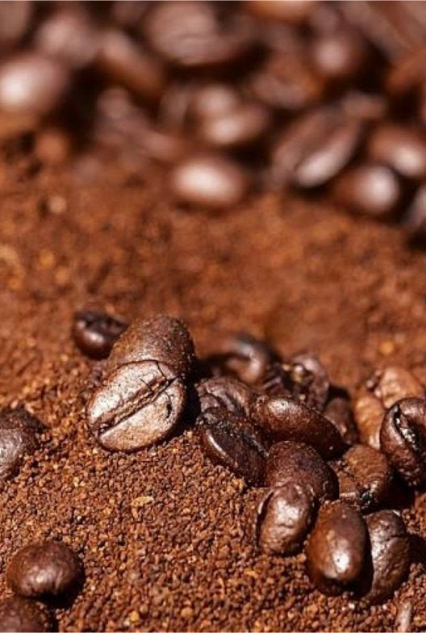

Técnicasde extracción de café
Fecha: 20 de Febrero de 2022
Precio: Gratis
Cupo: 20
El café ha pasado por muchos métodos de extracción y no necesariamente de forma lineal, sino más bien veremos que incluso cada región inventó una forma muy práctica de poder consumir café.
Aunque hoy una máquina de café promedio puede producir alrededor de 200 o más tazas por día, no siempre ha sido así.
Los métodos de extracción que te vamos a mostrara también son conocidos como métodos de filtrado de café, ya que muchos procesos consisten en eso, filtrar el café.